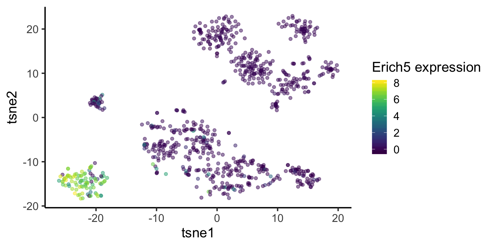

Downstream analysis
Sydney Precision Bioinformatics Group
04 November 2019
1 Introduction
We have now preprocessed and merged our single cell data. The next step is to analyse the data for cell type identification, identification of marker genes and et cetera. We will focus on some simple steps of downstream analysis for single cell RNA-sequencing (scRNA-seq) data as shown below.
- What are the cell types present in the dataset?
- What are these cell clusters?
- For a gene of interest, how can I visualise the gene expression distribution?
- What are the cell type composition in the data?
We will be using some of the functions we developed in our scdney package. You may visit our package website for the vignette and further details about scdney.
1.1 Loading packages
suppressPackageStartupMessages({
library(SingleCellExperiment)
library(SummarizedExperiment)
library(dplyr)
library(edgeR)
library(scdney)
library(mclust)
library(Rtsne)
library(parallel)
library(cluster)
library(ggplot2)
library(MAST)
library(viridis)
library(ggpubr)
library(plyr)
library(monocle)
library(scClassify)
})
theme_set(theme_classic(16))
#1.2 Loading data
In the scMerge publication, we have merged four mouse liver datasets together. This data is a bit too large for us to work with in this workshop, hence, we will take the merged data with all four datasets and subset ourselves to only the Su and Yang datasets. Some processings were performed in this data compared to the previous section, namely, the Megakaryocyte, Erythrocyte cells from the previous section are labelled as Hematopoietic cells in this section.
datapath = "./data/"
# datapath = "/home/data/"
sce_scMerge = readRDS(paste0(datapath, "liver_scMerge.rds"))
## We will subset Su et al. and Yang et al. datasets.
ids = colData(sce_scMerge)$batch %in% c("GSE87795", "GSE90047")
subset_data = sce_scMerge[,ids]
## We do not need the full data any more
rm(sce_scMerge)
lab = colData(subset_data)$cellTypes
nCs = length(table(lab))
mat = SummarizedExperiment::assay(subset_data, "scMerge")
2 What are the cell types present in the dataset?
Typically, a single cell RNA-sequencing experiment does not come with labelled cell type information for individual cells. We will need to identify cell types of indivdual cells in our data with bioinformatics analysis.
Before we identify the cell types in the dataset, we need to first identify how many distinct groups of populations we can find from our data. One common method to achieve this is a statistical technique called clustering. A clustering method will group similar samples (cells) together and partition samples that are different by comparing their feature information (gene expression).
There are two components that ultimately determine the performance of a clustering method:
- The similarity metric that determines if two cells are similar to each other, and
- The algorithm itself that uses the similarity metric to perform the grouping operations.
In our recent study, we found Pearson correlation to be the optimal similarity metric for comparing single cell RNA-seq data ( Kim et al., 2018 ). Therefore in this workshop, we will utilise scClust in our scdney package, which implemented 2017 Nature methods clustering algorithm SIMLR with pearson correlation.
2.1 How many distinct groups of populations are there in my dataset?
Typical clustering methods (except for some methods like hierarchical clustering) require users to specify the number of distinct groups (k) to cluster from your data. In the context of this data, we can think of k as the the number of cell types.
In an unsupervised setting, we do not know the exact number and therefore, in a practical setting, we should run clustering for various numbers for k and evaluate their clustering performance.
However, due to the time limit of this workshop, we will only run the scClust clustering for k = 6 as a demonstration and load a saved result with more values of k computed.
## For demonstration purpose, we will run k = 6 (which is actually the number of cell types in our dataset)
simlr_result_k6 = scClust(mat, 6, similarity = "pearson", method = "simlr", seed = 1, cores.ratio = 0, geneFilter = 0)
load("data/simlr.results.RData")[Extension] If you are interested, this is how you can compute data/simlr.results.RData by yourself.
## We will NOT run for various `k` to save time. Instead, we will load pre-computed results for `k` between 3 to 8
## This is an easy way to run `scClust` for k = 3, 4, 5, 6, 7, 8.
all_k = 3:8
simlr_results = sapply(as.character(all_k), function(k) {
scClust(mat, as.numeric(k), similarity = "pearson", method = "simlr", seed = 1, cores.ratio = 0, geneFilter = 0)
}, USE.NAMES = TRUE, simplify = FALSE)2.2 How do we select optimal k?
If our k is optimal, we should expect that each cluster is tightly packed together and the distances within the clusters, within-cluster sum of squares (WSS) are expected to be small. Thus, we will select the k with a small total WSS (compact clusters). This is called the “elbow” method.
# Find total WSS from all cluster outputs
all_wss = sapply(simlr_results, function(result) {
sum(result$y$withinss)
}, USE.NAMES = TRUE, simplify = TRUE)
plot_data = data.frame(
k = as.integer(names(all_wss)),
total_wss = all_wss
)
ggplot(plot_data,
aes(x = k,
y = total_wss)) +
geom_point(size = 3) +
stat_smooth(method = loess, col = "red",
method.args = list(degree = 1), se = FALSE) +
labs(title = "Compare Total WSS for each k",
y = "Total WSS")As shown in this plot, the graph begins to plateau from k = 5. We can estimate that k is around 5 or 6. We can further investigate using silhouette scores or other metrics but using our t-SNE plot (this may require a bit of practical experience) we will estimate k = 6.
Quick quiz
- We can determine
kwith compactness of the clusters. What other measures can we use to determinek? - How would you determine the optimal number of clusters for hierarchical clustering?
2.3 Effect of similarity metrics
For the purpose of demonstration, we would like to highlight the effect of similarity metric to your cluster output. We will first compute a t-SNE plot and then overlay that with
- Clustering result using Pearson correlation
- Clustering result using Euclidean distance
- True cell type labels from the publications
## To run scClust with euclidean distance, uncommnet the following lines.
## simlr_result_eucl_k6 = scClust(mat, 6, similarity = "euclidean", method = "simlr", seed = 1, cores.ratio = 0, geneFilter = 0)
## for convenience, we will load our pre-computed result
load(paste0(datapath, "simlr_result_eucl_k6.RData"))# create tsne object
set.seed(123)
tsne_result = Rtsne(t(mat), check_duplicates = FALSE)
#################################################
tmp_lab = as.numeric(factor(lab))
pear_cluster = plyr::mapvalues(
simlr_result_k6$y$cluster,
from = c(1,2,3,4,5,6),
to = c(2,3,1,4,6,5)
)
eucl_cluster = plyr::mapvalues(
simlr_result_eucl_k6$y$cluster,
from = c(1,2,3,4,5,6),
to = c(6,2,4,3,1,5)
)
#################################################
plot_data = data.frame(
tsne1 = rep(tsne_result$Y[,1], 3),
tsne2 = rep(tsne_result$Y[,2], 3),
cluster = factor(c(tmp_lab, pear_cluster, eucl_cluster)),
label = rep(c("Truth", "Pearson", "Euclidean"), each = length(lab)))
ggplot(plot_data, aes(x = tsne1, y = tsne2, colour = cluster)) +
geom_point(size = 2) +
labs(title = "t-SNE plot") +
facet_grid(~label) +
theme(legend.position = "none")plot_data2 = data.frame(
Truth = lab,
computed_cluster = as.factor(c(pear_cluster, eucl_cluster)),
label = rep(c("Pearson", "Euclidean"), each = length(lab))
)
plot_data2 %>%
dplyr::group_by(Truth, computed_cluster, label) %>%
dplyr::summarise(n = n()) %>%
dplyr::ungroup() %>%
tidyr::complete(Truth, computed_cluster, label, fill = list(n = 0)) %>%
ggplot(aes(x = computed_cluster,
y = Truth,
fill = n, label = n)) +
geom_tile() +
geom_text() +
facet_wrap(~label) +
scale_fill_distiller(palette = "Blues", direction = 1) +
labs(title = "")Quick quiz
- From your observation of the above t-SNE plot, did our clustering method (with Pearson correlation) group cells well?
[Optional] We can evaluate the clustering performance using the cell type labels provided from the publications.
# ARI
ari = c(mclust::adjustedRandIndex(lab, simlr_result_eucl_k6$y$cluster),
mclust::adjustedRandIndex(lab, simlr_result_k6$y$cluster))
# NMI
nmi = c(igraph::compare(as.numeric(factor(lab)),
simlr_result_eucl_k6$y$cluster, method = "nmi"),
igraph::compare(as.numeric(factor(lab)),
simlr_result_k6$y$cluster, method = "nmi"))
plot_data = data.frame(
dist = rep(c("Euclidean", "Pearson"), 2),
value = c(ari, nmi),
eval = rep(c("ARI", "NMI"), each = 2)
)
ggplot(plot_data, aes(x = dist, y = value, fill = dist)) +
geom_bar(stat="identity") +
facet_grid(col = vars(eval)) +
labs(x = "Similarity metrics",
y = "Evalution score",
title = "Effect of similarity metrics in scRNA-seq data") +
theme(legend.position = "none")3 What are these cell clusters?
Now that we have clustered all the cells to 6 distinct groups, we may want to find out what these clusters are, i.e. what cell types are there in my dataset? Thus, we may ask what defines a cell type?
We can use marker genes to identify cell types.
4 What are the marker genes that distinguish the different cell types?
Here we provide a function that allows one to find differentially expressed genes between a cluster and the remaining clusters. The input of this function is the expression matrix and the cluster ID. The output is a list of marker genes and their associated p-values.
Here we provide an example of this using the findmarker function from the scdney package.
To find out the marker genes in cluster 4, we type in 4 in the findmarker function. We then look at the top 10 genes ranked by p-value. We can then use ggplot to visualise the distribution of one of the genes across the dataset.
marker_cluster4 = findMarker(mat = mat,
cluster = simlr_result_k6$y$cluster,
cluster_id = 4)marker_cluster4[1:10, ]## gene P_value
## 12739 Gys2 6.068095e-153
## 19151 Shbg 2.513240e-134
## 12924 Hgd 1.577501e-126
## 19364 Slc27a2 8.229521e-124
## 6096 Gcgr 7.663681e-122
## 16209 Otc 1.338106e-115
## 12842 Hc 1.016114e-113
## 15057 Mogat2 1.509759e-113
## 12729 Gulo 6.801648e-113
## 14081 Lect2 1.976735e-112tsne_plotdf = data.frame(
tsne1 = tsne_result$Y[, 1],
tsne2 = tsne_result$Y[, 2]) %>%
dplyr::mutate(
cluster = as.factor(simlr_result_k6$y$cluster),
Gys2 = mat["Gys2", ])
ggplot(data = tsne_plotdf, aes(x = tsne1, y = tsne2, colour = Gys2) ) +
geom_point(alpha = 0.5) +
scale_color_viridis() +
labs(col = "Gys2 expression", x = "tsne1", y = "tsne2")Quick quiz
What does the above t-SNE plot tell you?
Here we repeat the analysis as above, but for cluster 3. See if you can understand the output.
marker_cluster3 = readRDS(paste0(datapath, "marker_cluster3.rds"))tsne_plotdf = tsne_plotdf %>%
dplyr::mutate(Erich5 = mat["Erich5",])
ggplot(data = tsne_plotdf,
mapping = aes(x = tsne1, y = tsne2, colour = Erich5)) +
geom_point(alpha = 0.5) +
scale_color_viridis() +
labs(col="Erich5 expression")
5 For a gene of interest, how can I visualise the gene expression distribution?
We have already identified some interesting marker genes from our dataset. If we have a gene that we know, and we want to identify its expression pattern in our dataset, we can also visualise the distribution. For example, Hnf4a has been stated in literature as a marker gene for hepatoblast cell (citation to be added).
The figure on the left highlights cluster 4 and the figure on the right highlights the expression of Hnf4a.
This suggests that cluster 4 could belong to hepatoblast cell.
tsne_plotdf = tsne_plotdf %>%
dplyr::mutate(Hnf4a = mat["Hnf4a",])
fig1 = ggplot(data = tsne_plotdf,
mapping = aes(x = tsne1, y = tsne2)) +
geom_point(aes(color = ifelse(cluster == 4, 'Yellow', 'Purple')), alpha = 0.5) +
scale_colour_viridis_d() +
labs(x = "",
y = "",
title = "Cluster 4") +
theme(legend.position = "none")
fig2 = ggplot(data = tsne_plotdf,
mapping = aes(x = tsne1, y = tsne2, colour = Hnf4a) ) +
geom_point(alpha = 0.5) +
scale_color_viridis() +
labs(x = "",
y = "",
title = "Hnf4a expression pattern")
ggarrange(fig1,fig2, ncol= 2, nrow = 1)Quick quiz
See if you can understand the output of the following code.
tsne_plotdf = tsne_plotdf %>%
dplyr::mutate(Epcam = mat["Epcam",])
fig1 = ggplot(data = tsne_plotdf, mapping = aes(x = tsne1, y = tsne2) ) +
geom_point(aes(color = ifelse(cluster == 3, 'Yellow', 'Purple')), alpha = 0.5) +
scale_colour_viridis_d() +
labs(x = "",
y = "",
title = "Cluster 3") +
theme(legend.position = "none")
fig2 = ggplot(data = tsne_plotdf,
mapping = aes(x = tsne1, y = tsne2, colour = Epcam) ) +
geom_point(alpha=0.5) +
scale_color_viridis() +
labs(x = "",
y = "",
title = "Epcam expression pattern")
ggarrange(fig1,fig2, ncol= 2, nrow = 1)As you may have already noticed from above steps, unsupervised clustering methods alone are not perfect in capturing cell type information. Using this step iteratively, we need to refine our cell type information.
6 What are the cell type composition in the data?
NOTE: From this step, we will assume we have correctly refined our cell type information from above steps and we will use the cell type information provided in Su et. al. 2017 and Yang et. al. 2017.
6.1 Cell type proportions
plot_data = data.frame(table(lab)) %>%
dplyr::mutate(lab = reorder(lab, Freq))
ggplot(plot_data,
aes(x = lab,
y = Freq,
fill = lab)) +
geom_bar(stat = "identity") +
labs(x = "Cell types",
y = "Frequency",
title = "Composition of cell types") +
coord_flip() +
theme(legend.position = "none")We observe that hepatoblast/hepatocyte is the largest population.
7 Extension: Monocle
A popular question in scRNA-Seq analysis is if the gene expressions patterns changes over some time. The monocle method is a well-established psuedo-time trajectory reconstruction method from Trapnell et. al. (2014).
The code below construct psuedo-time trajectory for the Hepatoblast/Hepatocyte cells in the merged data.
## Subsetting data to "hepatoblast/hepatocyte"
monocle_data = subset_data[,colData(subset_data)$cellTypes %in% c("hepatoblast/hepatocyte")]
## Add a "stage" column to the colData of the monocle_data
colData(monocle_data)$stage = stringr::str_sub(colnames(monocle_data), 1, 3)
table(colData(monocle_data)$stage)
## monocle needs a rowData (data about each gene)
rowData(monocle_data) = DataFrame(gene_short_name = rownames(monocle_data))
monocle_data
## moncole requires a `CellDataSet` object to run.
## You can convert monocle_data into a `CellDataSet` object using the scran package.
monocle_CellDataSet = scran::convertTo(
monocle_data,
type = "monocle",
assay.type = "scMerge"
# col.fields = c("cellTypes", "stage", "batch"),
# row.fields = c("gene_short_name")
) %>%
estimateSizeFactors()
## Performing differential gene test using "stage".
diff_test_res = differentialGeneTest(
monocle_CellDataSet, fullModelFormulaStr = "~stage")
save(diff_test_res,
monocle_CellDataSet,
file = paste0(datapath, "monocle_diff_test.RData"))load(paste0(datapath, "monocle_diff_test.RData"))
## We will select the top genes to be used for clustering and
## calculate dispersion (variability) parameters before constructing the trajectory
ordering_genes = row.names(subset(diff_test_res, qval < 0.00001))
length(ordering_genes)## [1] 868monocle_CellDataSet = setOrderingFilter(monocle_CellDataSet, ordering_genes)
monocle_CellDataSet = estimateDispersions(monocle_CellDataSet) %>% suppressWarnings()
# plot_ordering_genes(monocle_CellDataSet)
## Construcing the trajectory
monocle_CellDataSet = reduceDimension(monocle_CellDataSet,
max_components = 2,
method = 'DDRTree')
monocle_CellDataSet = orderCells(monocle_CellDataSet)
plot_cell_trajectory(monocle_CellDataSet, color_by = "stage")# monocle::plot_cell_clusters(monocle_CellDataSet)
plot_genes_in_pseudotime(monocle_CellDataSet[c("Sarm1", "Gm38388"),], color_by = "stage")8 Extension: Can we use the data as reference for future cell type classification?
A common application of single-cell RNA sequencing (RNA-seq) data is to identify discrete cell types. To take advantage of the large collection of well-annotated scRNA-seq datasets, scClassify package implements a set of methods to perform accurate cell type classification based on ensemble learning and sample size calculation.
The code below shows an example how to utilise a subset of data as reference data and then classify on the remaining data.
exprsMat_liver <- assay(subset_data, "scMerge")
set.seed(2019)
# subsample 80% of the data as training dataset, and rest as test
idx <- sample(ncol(exprsMat_liver), round(ncol(exprsMat_liver) * 0.8))
liver_exprsMat_train <- exprsMat_liver[, idx]
liver_exprsMat_test <- exprsMat_liver[, -idx]
liver_cellTypes_train <- subset_data$cellTypes[idx]
liver_cellTypes_test <- subset_data$cellTypes[-idx]
table(liver_cellTypes_train)## liver_cellTypes_train
## cholangiocyte Endothelial Cell Hematopoietic
## 83 44 117
## hepatoblast/hepatocyte Immune cell Mesenchymal Cell
## 321 44 61We first perform non-ensemble scClassify by using 80% data as our reference dataset. We use WKNN as the KNN algorithm, DE (differential expression genes) as the gene selection method, and lastly pearson as the similarity calculation method.
trainLiver <- scClassify::train_scClassify(exprsMat_train = liver_exprsMat_train,
cellTypes_train = liver_cellTypes_train,
algorithm = "WKNN",
selectFeatures = c("limma"),
similarity = c("pearson"),
returnList = FALSE,
verbose = TRUE)## after filtering not expressed genes
## [1] 22864 670
## [1] "Feature Selection..."
## [1] "Number of genes selected to construct HOPACH tree 300"
## [1] "Constructing tree ..."
## [1] "Training...."
## [1] "============ selecting features by: limma ============"trainLiver## Class: scClassifyTrainModel
## Model name: training
## Feature selection methods: limma
## Number of cells in the training data: 670
## Number of cell types in the training data: 6We can visualise the cell type hirearchy tree using plotCellTypeTree():
scClassify::plotCellTypeTree(trainLiver@cellTypeTree)Next, we perform predict_scClassify() with our trained model trainRes = trainLiver to predict the cell types of our query data matrix liver_exprsMat_test. Here, we used pearson as similarity metrics.
pred_res <- scClassify::predict_scClassify(exprsMat_test = liver_exprsMat_test,
cellTypes_test = liver_cellTypes_test,
trainRes = trainLiver,
algorithm = "WKNN",
features = c("limma"),
similarity = c("pearson"),
prob_threshold = 0.7,
verbose = TRUE)## Ensemble learning is disabled...
## Using parameters:
## similarity algorithm features
## "pearson" "WKNN" "limma"
## [1] "Using dynamic correlation cutoff..."
## [1] "Using dynamic correlation cutoff..."
## [1] "Using dynamic correlation cutoff..."
## classify_res
## correct correctly unassigned intermediate
## 0.91017964 0.00000000 0.02994012
## incorrectly unassigned error assigned misclassified
## 0.01197605 0.00000000 0.04790419scClassify_res <- pred_res$pearson_WKNN_limma$predResCheck prediction results with the original labels.
# create tsne object
set.seed(123)
tsne_result_test = Rtsne::Rtsne(t(liver_exprsMat_test), check_duplicates = FALSE)
#################################################
plot_data = data.frame(
tsne1 = rep(tsne_result_test$Y[,1], 2),
tsne2 = rep(tsne_result_test$Y[,2], 2),
cluster = factor(c(liver_cellTypes_test, scClassify_res)),
label = rep(c("Truth", "scClassify"), each = length(liver_cellTypes_test)))
ggplot(plot_data, aes(x = tsne1, y = tsne2, colour = cluster)) +
geom_point(size = 2) +
labs(title = "t-SNE plot") +
facet_grid(~label) +
theme(legend.position = "bottom")tab <- table(pred_res$pearson_WKNN_limma$predRes, liver_cellTypes_test)
knitr::kable(tab)| cholangiocyte | Endothelial Cell | Hematopoietic | hepatoblast/hepatocyte | Immune cell | Mesenchymal Cell | |
|---|---|---|---|---|---|---|
| cholangiocyte | 17 | 0 | 0 | 0 | 0 | 0 |
| Endothelial Cell | 0 | 8 | 1 | 0 | 2 | 0 |
| Hematopoietic | 0 | 0 | 27 | 0 | 1 | 0 |
| hepatoblast/hepatocyte | 0 | 0 | 0 | 73 | 0 | 0 |
| hepatoblast/hepatocyte_cholangiocyte | 3 | 0 | 0 | 0 | 0 | 1 |
| Immune cell | 0 | 0 | 2 | 0 | 3 | 0 |
| Immune cell_Mesenchymal Cell_Hematopoietic | 0 | 0 | 0 | 0 | 2 | 0 |
| Mesenchymal Cell | 0 | 0 | 0 | 0 | 1 | 24 |
| unassigned | 0 | 0 | 2 | 0 | 0 | 0 |
9 SessionInfo
sessionInfo()## R version 3.6.1 (2019-07-05)
## Platform: x86_64-apple-darwin15.6.0 (64-bit)
## Running under: macOS Mojave 10.14.6
##
## Matrix products: default
## BLAS: /Library/Frameworks/R.framework/Versions/3.6/Resources/lib/libRblas.0.dylib
## LAPACK: /Library/Frameworks/R.framework/Versions/3.6/Resources/lib/libRlapack.dylib
##
## locale:
## [1] en_AU.UTF-8/en_AU.UTF-8/en_AU.UTF-8/C/en_AU.UTF-8/en_AU.UTF-8
##
## attached base packages:
## [1] splines parallel stats4 stats graphics grDevices utils
## [8] datasets methods base
##
## other attached packages:
## [1] scClassify_0.2.0 monocle_2.14.0
## [3] DDRTree_0.1.5 irlba_2.3.3
## [5] VGAM_1.1-1 Matrix_1.2-17
## [7] plyr_1.8.4 ggpubr_0.2.3
## [9] magrittr_1.5 viridis_0.5.1
## [11] viridisLite_0.3.0 MAST_1.12.0
## [13] ggplot2_3.2.1 cluster_2.1.0
## [15] Rtsne_0.15 mclust_5.4.5
## [17] scdney_0.1.5 edgeR_3.28.0
## [19] limma_3.42.0 dplyr_0.8.3
## [21] SingleCellExperiment_1.8.0 SummarizedExperiment_1.16.0
## [23] DelayedArray_0.12.0 BiocParallel_1.20.0
## [25] matrixStats_0.55.0 Biobase_2.46.0
## [27] GenomicRanges_1.38.0 GenomeInfoDb_1.22.0
## [29] IRanges_2.20.0 S4Vectors_0.24.0
## [31] BiocGenerics_0.32.0
##
## loaded via a namespace (and not attached):
## [1] snow_0.4-3 backports_1.1.5 Hmisc_4.2-0
## [4] igraph_1.2.4.1 lazyeval_0.2.2 proxyC_0.1.5
## [7] densityClust_0.3 fastICA_1.2-2 amap_0.8-17
## [10] digest_0.6.22 foreach_1.4.7 htmltools_0.4.0
## [13] checkmate_1.9.4 doParallel_1.0.15 mixtools_1.1.0
## [16] recipes_0.1.7 graphlayouts_0.5.0 gower_0.2.1
## [19] RcppParallel_4.4.4 docopt_0.6.1 colorspace_1.4-1
## [22] ggrepel_0.8.1 pan_1.6 xfun_0.10
## [25] sparsesvd_0.2 crayon_1.3.4 RCurl_1.95-4.12
## [28] lme4_1.1-21 zeallot_0.1.0 survival_2.44-1.1
## [31] iterators_1.0.12 glue_1.3.1 polyclip_1.10-0
## [34] gtable_0.3.0 ipred_0.9-9 zlibbioc_1.32.0
## [37] XVector_0.26.0 jomo_2.6-9 abind_1.4-5
## [40] scales_1.0.0 pheatmap_1.0.12 mvtnorm_1.0-11
## [43] Rcpp_1.0.2 htmlTable_1.13.2 proxy_0.4-23
## [46] foreign_0.8-72 Formula_1.2-3 lava_1.6.6
## [49] prodlim_2018.04.18 htmlwidgets_1.5.1 FNN_1.1.3
## [52] RColorBrewer_1.1-2 ellipsis_0.3.0 acepack_1.4.1
## [55] mice_3.6.0 pkgconfig_2.0.3 farver_1.1.0
## [58] nnet_7.3-12 locfit_1.5-9.1 caret_6.0-84
## [61] labeling_0.3 tidyselect_0.2.5 rlang_0.4.1
## [64] reshape2_1.4.3 pbmcapply_1.5.0 munsell_0.5.0
## [67] tools_3.6.1 generics_0.0.2 broom_0.5.2
## [70] ggridges_0.5.1 evaluate_0.14 stringr_1.4.0
## [73] yaml_2.2.0 ModelMetrics_1.2.2 knitr_1.25
## [76] tidygraph_1.1.2 RANN_2.6.1 randomForest_4.6-14
## [79] purrr_0.3.3 mitml_0.3-7 dendextend_1.12.0
## [82] ggraph_2.0.0 nlme_3.1-141 slam_0.1-45
## [85] compiler_3.6.1 rstudioapi_0.10 ggsignif_0.6.0
## [88] e1071_1.7-2 statmod_1.4.32 tibble_2.1.3
## [91] tweenr_1.0.1 DescTools_0.99.29 stringi_1.4.3
## [94] highr_0.8 lattice_0.20-38 hopach_2.46.0
## [97] nloptr_1.2.1 HSMMSingleCell_1.5.0 vctrs_0.2.0
## [100] pillar_1.4.2 lifecycle_0.1.0 combinat_0.0-8
## [103] cowplot_1.0.0 data.table_1.12.6 bitops_1.0-6
## [106] R6_2.4.0 latticeExtra_0.6-28 gridExtra_2.3
## [109] codetools_0.2-16 boot_1.3-23 MASS_7.3-51.4
## [112] assertthat_0.2.1 minpack.lm_1.2-1 withr_2.1.2
## [115] qlcMatrix_0.9.7 GenomeInfoDbData_1.2.2 diptest_0.75-7
## [118] mgcv_1.8-29 expm_0.999-4 doSNOW_1.0.18
## [121] grid_3.6.1 rpart_4.1-15 timeDate_3043.102
## [124] tidyr_1.0.0 class_7.3-15 minqa_1.2.4
## [127] rmarkdown_1.16 segmented_1.0-0 clusteval_0.1
## [130] ggforce_0.3.1 lubridate_1.7.4 base64enc_0.1-3